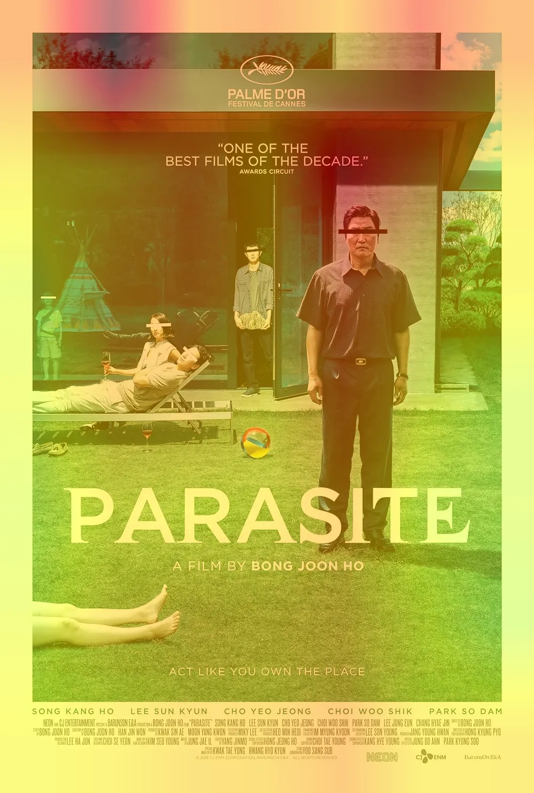
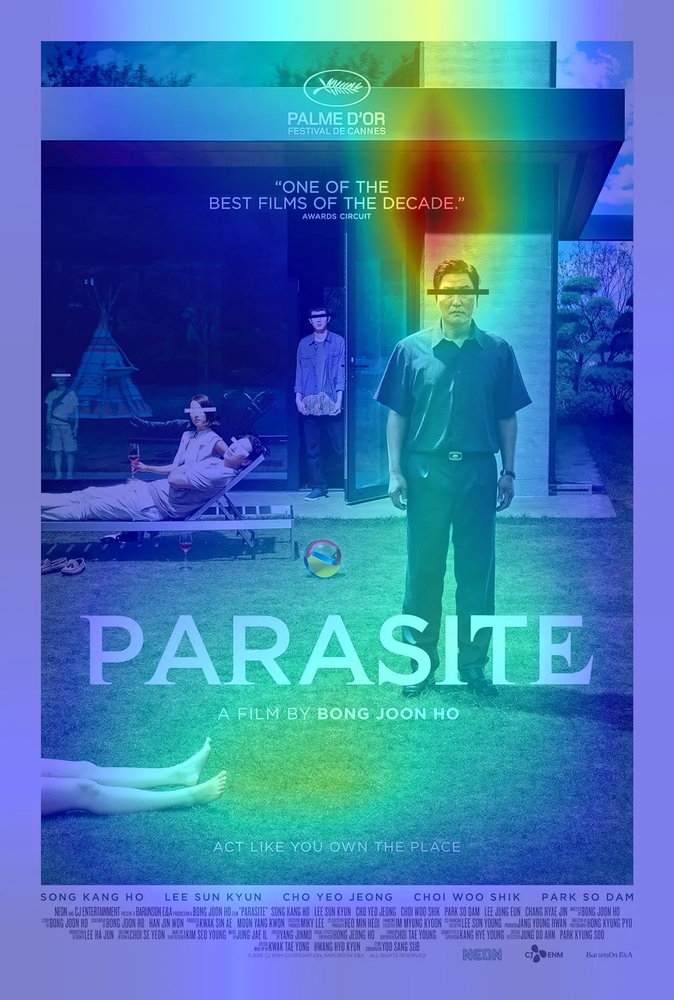
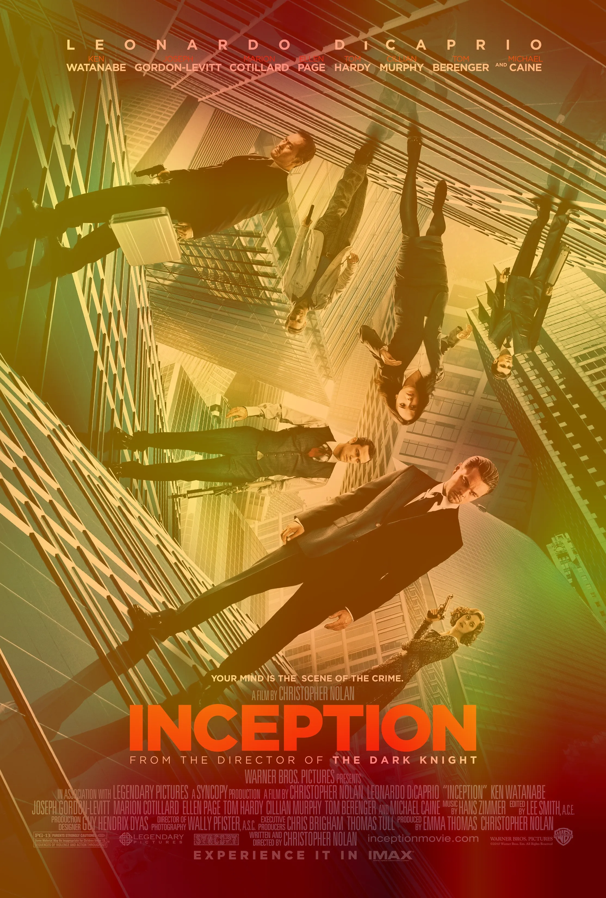
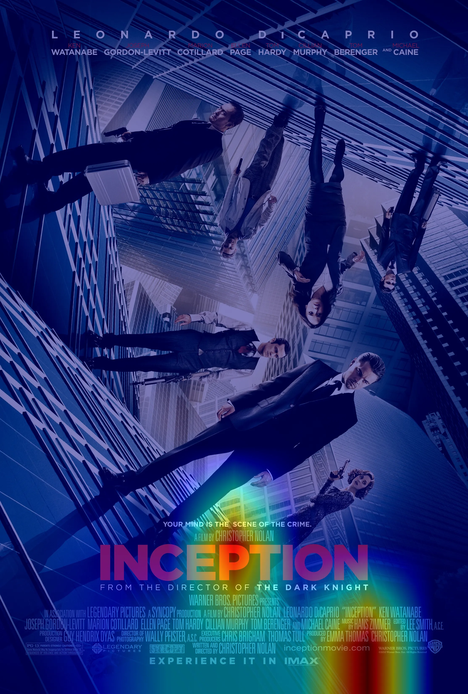

Trang báo cáo tổng hợp cho Assignment 1 - phần Multimodal Classification. Tập trung phân tích mô hình Zero-Shot CLIP và LoRA Few-Shot trên tập MM-IMDB (23 genres).
Bài toán là phân loại đa phương thức đa nhãn (Multi-label multimodal classification), sử dụng cặp thông tin Ảnh poster và Tiêu đề phim. Tập dữ liệu chứa tổng cộng 23 thể loại (genres).
Phân tích sâu tập dữ liệu MM-IMDB cho thấy tính chất đặc thù của bài toán phân loại đa nhãn (multi-label) trong không gian điện ảnh. Đa số các bộ phim chỉ sở hữu từ 1 đến 3 thể loại trong tổng số 23 nhãn có sẵn, dẫn đến ma trận nhãn thưa thớt (sparse matrix) với hơn 95% giá trị là 0. Đặc tính mất cân bằng nghiêm trọng (extreme class imbalance) và phân bố đuôi dài (long-tail distribution) này đặt ra thách thức lớn, dễ khiến mô hình rơi vào "bẫy" giả định toàn bộ nhãn là 0 (collapse). Vì vậy, kỹ thuật lấy mẫu K-shot và áp dụng trọng số mảng pos_weight được sử dụng như giải pháp triệt để.
Để lượng hóa chính xác mức độ thử thách của bài toán Multimodal, ta tiến hành 4 phép phân tích cốt lõi (sử dụng Matplotlib/Seaborn):
Dữ liệu được chia train/val/test theo tỉ lệ 70/15/15. Vì bài toán nhắm vào Few-Shot learning, tập huấn luyện được lấy mẫu ngẫu nhiên (stratified) đảm bảo mỗi lớp có ít nhất K mẫu để mô hình có đủ khái niệm cơ bản về từng thể loại.
Dự án thực hiện đánh giá chéo giữa 2 cấu hình tiếp cận (Approaches): Zero-Shot Inference truyền thống và Few-Shot Fine-tuning bằng cơ chế Parameter-Efficient Fine-Tuning (PEFT).
Mô hình giải quyết bài toán bằng chiến lược Late Fusion với hai luồng xử lý song song (parallel streams) để trích xuất đặc trưng độc lập trước khi dung hợp:
ViT-B/32 cho xử lý điểm ảnh (image pixels) và Transformer Encoder cho các token văn bản.y = W_0x + (α/r)BAx.[CLS] và [EOS] kích thước 512-dim) bị ép chuẩn hoá Euclidean (L2 Norm). Bước này cực kỳ cốt lõi để thu hẹp khoảng cách biên độ gốc, ngăn chặn hiện tượng một tín hiệu phân cực lấn át tín hiệu còn lại (modality dominance) trước khi ghép nối chuỗi (Concatenation) thành vector 1024-dim.BCEWithLogitsLoss. Ma trận pos_weight được tích hợp để tự động tăng cấu trúc phạt đối với các nhãn thiểu số (rare genres), đẩy lùi nguy cơ sụp đổ mô hình (collapse).Hỏi: Mô hình thực sự học được điều gì từ LoRA với chưa tới 2% tham số? Nó có học nhận diện sự vật mới không?
Giải ảo (Intuition): Hoàn toàn không. Trọng số backbone CLIP đã có sẵn năng lực liên kết phân phối không gian hình ảnh/văn bản. LoRA rank-thấp không tái trích xuất năng lực nhận dạng mới (no new feature extraction). Thay vào đó, nó thuần túy tinh chỉnh phép chiếu không gian (affine transformation) nhằm phân rã và bóp méo (warp) các representations ngổn ngang tập trung thẳng vào một siêu mặt phẳng (hyperplane). Nơi đây cho phép tuyến tính hoá để chia tách ranh giới cho đúng 23 labels cụ thể trong tập dataset này. Sự hội tụ diễn ra tức thì trong khi triệt tiêu hoàn toàn rủi ro suy giảm nhận thức trí nhớ cũ (Catastrophic forgetting).
# CLIP LoRA Configuration & Custom Fusion Classifier
lora_config = LoraConfig(
r=8,
lora_alpha=16,
target_modules=["q_proj", "k_proj", "v_proj", "out_proj", "fc1", "fc2", "qkv", "proj"],
lora_dropout=0.05,
bias="none",
task_type=TaskType.FEATURE_EXTRACTION,
modules_to_save=["classifier_head"]
)
# Classifier Head Projection
concat_features = torch.cat((image_features, text_features), dim=1) # 512 + 512 = 1024
logits = self.classifier_head(concat_features) # Output: [B, 23 Categories]
Quá trình tối ưu hoá bài toán đa nhãn với đặc thù thưa thớt nhãn yêu cầu thiết kế hàm loss và cấu hình siêu tham số tinh tế.
BCEWithLogitsLoss kết hợp tầng Sigmoid và BCELoss vào duy nhất một class, mang tính ổn định số học (numerical stability) vượt trội so với sử dụng hàm Softmax. Với bài toán mà 1 bộ phim vừa có thể là "Action" vừa là "Comedy", CrossEntropyLoss là phi thực tế bởi nó giả định tổng xác suất của mọi nhãn phải bằng 1 (chỉ có duy nhất 1 nhãn đúng). Ngược lại, BCEWithLogitsLoss xử lý từng nơ-ron nhãn một cách hoàn toàn độc lập, dự đoán nhãn nhị phân dạng Independent Bernoulli cho chính xác 23 genres song song.
pos_weight
Bởi ma trận MM-IMDB chứa hơn 95% giá trị 0 (phần lớn nhãn là Negative), một mô hình cơ bản sẽ dính "Cạm bẫy Collapse" – luôn luôn dự đoán kết quả là 0 toàn dải để thu về accuracy 95%. Tham số pos_weight được cài cắm để trừng phạt lỗi False Negatives mạnh gấp nhiều lần. Khi mô hình dự đoán sai một nhãn Positive (nhãn số 1 - cực kiếm gặp), hàm loss sẽ nhân trọng số này lên lỗi thất thoát nhằm ép Gradient dịch chuyển về hướng ưu tiên phát hiện ra đối tượng thiểu số.
Hệ số Scale của LoRA hoạt động theo dạng scale = $\alpha / r$. Với r=8 và $\alpha=16$, scale được khóa cứng ở mức 2. Con số scaling này là phòng tuyến tối đa giúp mạng Neural không bị Catastrophic Forgetting (chứng quên kiến thức cục bộ). Thay vì Fine-tuning chập chờn toàn bộ tỷ trọng của backbone Transformer làm vỡ không gian pre-trained, tỷ lệ chuẩn xác này giữ module LoRA chỉ đóng vai trò như lực "Push" nhỏ để định vị lại (Alignment) bề mặt tri thức điện ảnh của MM-IMDB chứ không tàn phá nền tảng ViT/Transformer khổng lồ bên dưới.
Biểu đồ quá trình huấn luyện theo phong cách WandB (Loss và Macro F1 curves).
Bảng phân tích đánh giá đa chiều (Zero-Shot vs Single Modality vs Few-Shot vs Full Fine-tune) nhằm đáp ứng trọn vẹn yêu cầu cấu trúc chuẩn mực về Metrics (Accuracy, F1, Latency, Params).
Thực nghiệm trên 1 GPU NVIDIA chỉ ra CLIP Zero-Shot suy luận rất tệ (chỉ đạt ~5.6% F1). Căn nguyên đến từ Domain Shift (độ lệch phân phối miền dữ liệu). Điển hình, mô hình CLIP nền tảng được pre-train trên hàng trăm triệu cặp ảnh-text lấy từ internet vốn mang tính mô tả thực tại/hình thái học (ví dụ: "con chó đang chạy trên cỏ"). Ngược lại, Poster Phim vốn dĩ mang tính trừu tượng nghệ thuật rất cao (v.d: text mờ ảo nghệ thuật, dải băng màu sắc kì dị biểu trưng cho thể loại Horror hoặc Tâm lý/Noir). Sự chênh lệch khốc liệt này làm Zero-Shot lạc lối bởi không khớp Vector space. Tuy nhiên, khi ta mớm chỉ vài examples qua Few-Shot LoRA, lớp Adapter chỉ gồm 2.8 triệu params lập tức ép không gian biểu diễn (embedding space) của ViT xoay vặn lại cho bám khớp đúng cái "vibe" của điện ảnh, giúp Macro F1 nhảy vọt cực nhanh.
Nếu chỉ sử dụng Single Modality (Text-only BERT) chiến đấu độc lập, hiệu suất lập tức bị chặn giới hạn (bottleneck) tại Weighted F1 42.8%. Vấn đề là Plot summary trên IMDB rất nhiều đoạn cụt lủn và trung tính về câu chữ (vd: "Ba người bước vào một tòa nhà bỏ hoang"). Dựa vào text đơn điệu, model phân vân cực độ giữa Adventure hay Horror. Kiến trúc Multimodal Late Fusion của chúng ta đánh bại giới hạn này bởi nó liên kết chéo các Semantic anchors. Trong cùng ví dụ trên, Luồng Visual Stream (Poster rách nát, tông đen tối, font chữ rỉ máu đục lỗ) ngay lập tức gạt bỏ Adventure và thiết lập tỉ lệ suy luận Horror rất mạnh. Sự bù trừ khiếm khuyết của từng kênh đầu vào độc lập này chính là lý do tuyệt đối đẩy Weight F1 của Multimodal vượt xa cấu trúc Single Modality.
Mô hình Transformer-native sử dụng Attention Rollout phân loại vùng trọng điểm trên ảnh các phim (ViT-native, không dùng phương pháp grad-based như GradCAM).
What it is: Công cụ định lượng dạng visual attribution (hoàn toàn gradient-free) chuyên dùng truy vết các token/patch để xem phần thông tin nào có khả năng "sống sót" lọt qua nhiều hàm biến đổi tới tận classifier cuối.
How it works (Technical): Cấu trúc Attention Block chính là một hệ ma trận định hướng (routing matrices). Trước tiên, ta bảo tồn tín hiệu rễ (identity) bằng cách bù thêm residual connections (0.5 * A_l + 0.5 * I). Lớp Attention Rollout kích kích chuỗi nhân ma trận liên hoàn (Matrix Scalar Iterations) gom chập từ tầng đích n ngược về tầng xuất phát 0: A_rollout = A_n × A_n-1 ... × A_0. Tại mặt phẳng Rollout tổng hợp, ta cô lập ra tensor tương tác thẳng với [CLS] token đại diện tổng để scale up (bilinear interpolation) thành màu trên lưới grid 2D.
Intuition: Đóng vai trò là "máy quét Eye-Tracking" của bản thân mô hình Transformer, bác nghiệm sự phỏng đoán dựa vào hộp đen (black box guesswork) mà là suy diễn có cơ sở.
💡 Khắc Phục Lầm Tưởng: Màu đỏ đập vào mắt trên Heatmap thực sự có nghĩa là gì?
Khu vực rực đỏ biểu thị vùng trọng số đạt giới hạn trên (peak attention magnitude). Mô hình không tư duy concept sự vật như não người. Sắc đỏ chỉ minh chứng vùng pixel tại ô đó đang phản xạ tương quan tĩnh học (statistical correlation) cosine hoàn hảo với label embedding định sẵn. Đặc biệt, nếu nền trống trơn (background darkness) vẫn cháy đỏ bừng — model đang ăn shortcut (ví dụ: bám vào tính chất "khung cảnh thiếu sáng độ phân giải bệch" làm thước đo cho nhãn Thriller/Horror), chứ model hoàn toàn không "tìm thấy con dao giấu ở góc tối"!




Gradio - Hugging Face Space
Nếu iframe bị lỗi, bấm nút bên dưới để mở Hugging Face Space ở tab mới.
Mở Hugging Face SpaceĐánh giá tối ưu độ hiệu quả. LoRA chỉ tốn 0.83% tham số huấn luyện (~60x nhỏ hơn) và tốc độ huấn luyện nhanh gấp 2.25x.
Diễn giải cấu trúc Histogram Biểu đồ Độ trễ phân phối (Latency Variance):